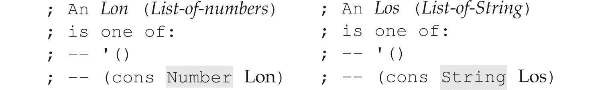
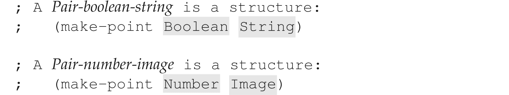
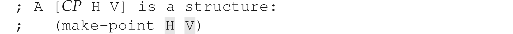
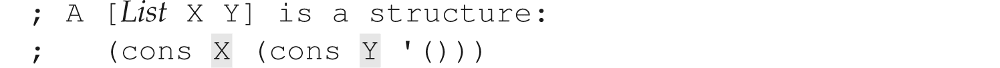
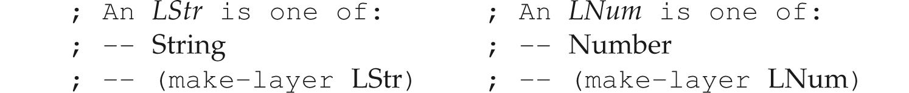
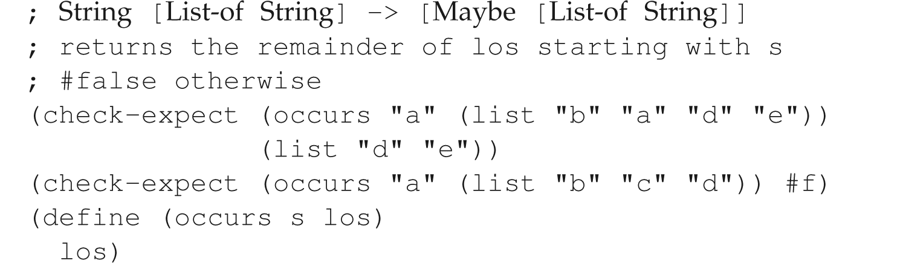

14.3 Similarities in Data Definitions
Now take a close look at the following two data definitions:

The one on the left introduces lists of numbers; the one on the right describes lists of strings. And the two data definitions are similar. Like similar functions, the two data definitions use two different names, but this is irrelevant because any name would do. The only real difference concerns the first position inside of cons in the second clause, which specifies what kind of items the list contains.
In order to abstract over this one difference, we proceed as if a data definition were a function. We introduce a parameter, which makes the data definition look like a function, and where there used to be different references, we use this parameter:
; A [List-of ITEM] is one of:
; -- '()
; -- (cons ITEM [List-of ITEM])
We call such abstract data definitions parametric data definitions because of the parameter. Roughly speaking, a parametric data definition abstracts from a reference to a particular collection of data in the same manner as a function abstracts from a particular value.
The question is, of course, what these parameters range over. For a function, they stand for an unknown value; when the function is applied, the value becomes known. For a parametric data definition, a parameter stands for an entire class of values. The process of supplying the name of a data collection to a parametric data definition is called instantiation; here are some sample instantiations of the List-of abstraction:
• When we write [List-of Number], we are saying that ITEM represents all numbers so it is just another name for List-of-numbers;
• Similarly, [List-of String] defines the same class of data as List-of-String; and
• If we had identified a class of inventory records, like this:
(define-struct ir [name price])
; An IR is a structure:
; (make-ir String Number)
then [List-of IR] would be a name for the lists of inventory records.
By convention, we use names with all capital letters for parameters of data definitions, while the arguments are spelled as needed.
Our way to validate that these short-hands really mean what we say they mean is to substitute the actual name of a data definition, for example, Number, for the parameter ITEM of the data definition and to use a plain name for the data definition:
; A List-of-numbers-again is one of:
; -- '()
; -- (cons Number List-of-numbers-again)
Since the data definition is self-referential, we copied the entire data definition. The resulting definition looks exactly like the conventional one for lists of numbers and truly identifies the same class of data.
Let’s take a brief look at a second example, starting with a structure type definition:
(define-struct point [hori veri])
Here are two different data definitions that use this structure type:

In this case, the data definitions differ in two places—both marked by highlighting. The differences in the hori fields correspond to each other, and so do the differences in the veri fields. It is thus necessary to introduce two parameters to create an abstract data definition:

Here H is the parameter for data collections for the hori field, and V stands for data collections that can show up in the veri field.
To instantiate a data definition with two parameters, you need two names of data collections. Using Number and Image for the parameters of CP, you get [CP Number Image], which describes the collections of points that combine a number with an image. In contrast [CP Boolean String] combines Boolean values with strings in a point structure.
Exercise 239. A list of two items is another frequently used form of data in ISL programming. Here is a data definition with two parameters:

Instantiate this definition to describe the following classes of data:
• pairs of Numbers,
• pairs of Numbers and 1Strings, and
• pairs of Strings and Booleans.
Also make one concrete example for each of these three data definitions. 
Once you have parametric data definitions, you can mix and match them to great effect. Consider this one:
; [List-of [CP Boolean Image]]
The outermost notation is [List-of ⋯ ], which means that you are dealing with a list. The question is what kind of data the list contains, and to answer that question, you need to study the inside of the List-of expression:
; [CP Boolean Image]
This inner part combines Boolean and Image in a point. By implication,
; [List-of [CP Boolean Image]]
is a list of points that combine Booleans and Images. Similarly,
; [CP Number [List-of Image]]
is an instantiation of CP that combines one Number with a list of Images.
Exercise 240. Here are two strange but similar data definitions:

Both data definitions rely on this structure-type definition:
(define-struct layer [stuff])
Both define nested forms of data: one is about numbers and the other about strings. Make examples for both. Abstract over the two. Then instantiate the abstract definition to get back the originals.
Exercise 241. Compare the definitions for NEList-of-temperatures and NEList-of-Booleans. Then formulate an abstract data definition NEList-of.
Exercise 242. Here is one more parametric data definition:
; A [Maybe X] is one of:
; -- #false
; -- X
Interpret these data definitions: [Maybe String], [Maybe [List-of String]], and [List-of [Maybe String]].
What does the following function signature mean:

Work through the remaining steps of the design recipe.